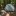
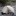
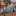
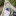
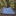
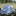
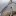
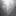

阿前的帳篷
介紹阿前登山一路上使用的帳篷，越來越朝輕量化發展。
索引
NatureHike Vik 1三季版 #單層自立帳 重量1123g 單人帳
無營釘1123g，含營釘1224g，雪裙版1346g。
自立帳搭設容易，但多了支架的關係重量偏重，如果是輕鬆的露營行程，或是難以下釘的地點，不在乎重量的話，還是蠻好用的。
前庭處可以放包包，但其實全部都丟進帳篷也還行。
前陣子迪卡農也有看到類似結構的單人帳。
 
有一次騎車噴飛了帳篷支架，只好重買一次，才知道雪裙版的重量差異。
使用過的場合
- 2022-08-13 屏風山（松針營地）
- 2022-10-01 志加陽上雪主下武陵農場（賽良久營地、武陵農場）
- 2023-02-26 借人使用屏風山（松針營地）
- 2023-04-01 四日谷關走五雄（僅一晚馬崙山露營區）
- 2023-08-12 三天兩夜畢羊縱走（畢祿山稜線營地）
- 2025-01-29 春節精英溫泉野營
Aricxi埃瑞斯15D超輕款單人帳篷 #雙層非自立帳 重量920g 單人帳
內外帳加使用VIK營釘重量920g，單純外帳只要306g(重點)。
非自立帳需要登山杖與營釘營繩拉緊才能搭建，比較不方便；超級超級的小，尤其內帳紗網會整個垂下來，後來就不太用內帳了。

使用過的場合（內外帳）
- 2023-02-26 屏風山（松針營地）
- 2023-04-28 三天兩夜屏風山上奇萊北壁與奇萊主山（屏風山中峰營地、奇萊三叉營地）
- 2023-07-22 兩天一夜品田池有（三叉營地）
後期配置 #天幕帳 重量306g 單人帳
後期都改成只用外帳，搭配玻璃紙(polycro)地布與泰維克露宿袋，三個加起來重量大約590g，比搭配原始內帳更輕，因為是普通塗矽尼龍帳，也很好壓縮尺寸。
這個配置防雨機能下降，氣象預報如果說會狂風暴雨就不要帶了（就根本不要上山才對）。
雖然中低海拔晚上開燈大隻的蛾飛進來超級嚇人，但為了輕，忍忍...。

使用過的場合（僅外帳搭配玻璃紙地布）
- 2024-02-03 兩天一夜佐米縱走
- 2024-06-22 三天兩夜佳陽南稜（雙股稜營地、油婆蘭營地）
Zpacks Duplex Tent #單層非自立帳 重量530g 雙人帳
超級爆炸的貴，DCF材質本身就不便宜，真的是要等美金貶值的時候再買，DFC材質使得帳篷非常的輕，但比較難壓縮。
完全輕量的優勢長程縱走也可以很好的應付，尤其是與別人組隊的時候。
 
DCF材質極度透光。
 
使用過的場合
- 2023-11-11 兩天一夜桃山喀拉業（桃山營地）
- 2023-12-16 兩天一夜羅馬縱走（2400鞍部有勝溪支流溪源營地）
- 2024-02-12 五天四夜春節南一段（石山東鞍營地、卑南主山北峰下營地、雲水山營地、2930鞍營地）
- 2024-06-22 借人使用三天兩夜佳陽南稜（雙股稜營地、油婆蘭營地）
- 2024-09-14 三天兩夜戒茂斯上布拉克桑西稜出向陽（布拉克桑西稜2030營地、布新營地）